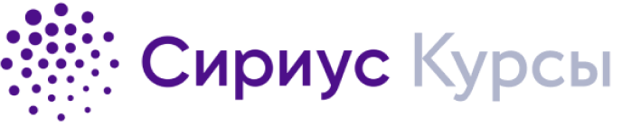

«Постоянные усилия — а не сила или ум — вот ключ к раскрытию нашего потенциала»
— Уинстон Черчилль (1874-1965)
Обучение математике сравнимо с обучением игре на музыкальном инструменте: учась теоретическим основам, осваивая базовые техники и реализуя их на практике, вы постепенно оттачиваете своё мастерство и совершенствуетесь.
В интернете существует множество информативных видеороликов, посвященных математике. Просмотр таких видео позволяет расширить ваши представления об этой науке.
Восхождение
Первостепенное в изучении математике - крепко освоить школьную программу. Для этого вполне достаточно активно решать задачи на уроках и добросовестно выполнять домашнее задание. Это совсем нетрудный, однако принципиально важный шаг.
Если Вы намеренны хорошо знать математику, стремитесь быть лучшими: пытайтесь решать задачи быстрее всех, при этом стараясь не допускать ошибок.
Проявляйте усердие на регулярной основе, тренируйте свою внимательность, способность сосредотачиваться - и в скором времени вы обнаружите, что в школьной программе нет ничего сложного.
Рассвет
Если вы чувствуете в себе большой интерес и энергию и вам мало школьной математики, вы можете записаться на дополнительные кружки. Например, на спецкурс "Решение нестандартных задач" П. А. Исанбаева. Павел Анатольевич даёт сложные, но очень интересные задачи; чтобы получать наибольшую пользу от занятий, необходимо стараться прорешивать все задания листка.
Также существуют онлайн-курсы Образовательного центра Сириус. Обучение бесплатное, авторы курсов — преподаватели ведущих школ и вузов. Нужно только зарегистрироваться и своевременно вступить в поток.

Олимпиады
Олимпиадные задачи - вершина школьной математики. Для одних - это занятное увлечение, для других - перспектива поступить в "сильный" вуз, для третьих - первый шаг к научным открытиям.
Результаты приёма на конкурсную группу “ФПМИ Прикладная математика” (бывш. “ФПМИ Математика и физика”)
(!) 310 из 310 баллов возможных (3*100 баллов по ЕГЭ + 10 баллов за индивидуальные достижения) - проходной балл на бюджет одной из групп факультета ФПМИ в Московском физико-техническом институте (МФТИ)
В каких олимпиадах участвовать?

«Как можно быстрее превращайте ваши масштабные мысли в масштабные действия.
Не позволяйте ложным отговоркам затормозить вас»
— Дональд Трамп (1946 - ∞)
Дополнительные материалы
– один из лучших вариантов для начала обучения в области классической олимпиадной математики; подробно рассказано про азы комбинаторики, теории чисел, доказательство неравенств, конструкции, принцип Дирихле; все задачи с решениями.
– база при изучении геометрии; от "школьных" задач до классических олимпиадных; большинство задач с решениями.
– теоретическое введение в комбинаторику.
– углублённое изучение комбинаторики; задачи с ответами.
– углублённое изучение комбинаторики; задачи с ответами.
– углублённое изучение комбинаторики; задачи с ответами.
– искусство математики; красивые геометрические факты.
– разбор сложных задач простым языком рассуждений.